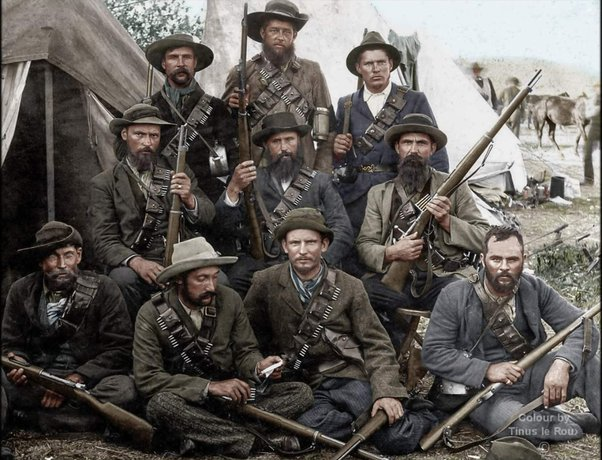

South Africa's Beginnings
In 1652, Dutch explorers founded a settlement on the Southern coast of Africa. Over the next following centuries, the Dutch used their colony as a stepping-off point to connect them to the more profitable markets in Asia. During the time of Napoleon war would rage all over Europe, even conquering the Netherlands. With France capturing most of Europe, Britain in a effort to not have other conquered nations’ overseas territory to go the France would decide to take control over the Dutch South Africa.
After the British effectively took control over the SA the was immediate conflict between them, the descendants of the Dutch settlers(Afrikaners), and the Native Africans. With the British empire having already abolished slavery, to the Dutch they saw it as their way of life being taken away moving to what they became known as the Orange Free State and Transvaal.
The year was 1867 and diamonds were discovered in South Africa. The prospect of diamond mining became a more and more profitable outcome of the colony, British forces began a campaign to seize most parts of the reign. The campaigns would lead to wars and battles being broken out between the Brits, Natives, and Boers. Battles such as Isandlwana, Rorke’s Drift, Stromberg, Magersfontein, and Colenso. With Britain winning the wars of conquest and fully unifying the reign an agreement was reached between them and the Afrikaners.

Beginning of Apartheid
By the conclusion of the Second Boer War, in an effort to preserve their way of life the Boers would make peace with the British on the account that the other racial groups in the newly unified colony would have less social and political power. This would plant the seeds that would grow into Apartheid.
The official policy wouldn’t be put into law until 1948, for the period of time between the end of the Secong Boer War and the start of Apartheid a seires of laws were passed ment to constict the movement of natives and other laborer groups from Asia like Indians and Pakistanis. For most of South African history when Europeans arrived the black population has been treated as the laborer class whether it was being enslaved by the Dutch and British in the it early beginnings the to when mining companies.